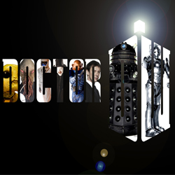

| Home | The Doctors | The Companions | The Villains |
|
|||
EpisodesDoctor Who originally ran for 26 seasons on BBC One, from 23 November 1963 until 6 December 1989. During the original run, each weekly episode formed part of a story (or "serial") — usually of four to six parts in earlier years and three to four in later years. Notable exceptions were: The Daleks' Master Plan, which aired in 12 episodes (plus an earlier one-episode teaser,[47] "Mission to the Unknown", featuring none of the regular cast[48]); almost an entire season of seven-episode serials (season 7); the 10-episode serial The War Games;[49] and The Trial of a Time Lord, which ran for 14 episodes (albeit divided into three production codes and four narrative segments) during season 23. Occasionally serials were loosely connected by a storyline, such as season 8 being devoted to the Doctor battling a rogue Time Lord called The Master, season 16's quest for The Key to Time, season 18's journey through E-Space and the theme of entropy, and season 20's Black Guardian Trilogy. The programme was intended to be educational and for family viewing on the early Saturday evening schedule.[Initially, it alternated stories set in the past, which were intended to teach younger audience members about history, with stories set either in the future or in outer space to teach them about science.This was also reflected in the Doctor's original companions, one of whom was a science teacher and another a history teacher. However, science fiction stories came to dominate the programme and the "historicals", which were not popular with the production team, were dropped after The Highlanders (1967). While the show continued to use historical settings, they were generally used as a backdrop for science fiction tales, with one exception: Black Orchid set in 1920s England. The early stories were serial-like in nature, with the narrative of one story flowing into the next, and each episode having its own title, although produced as distinct stories with their own production codes.Following The Gunfighters (1966), however, each serial was given its own title, with the individual parts simply being assigned episode numbers. Of the programme's many writers, Robert Holmes was the most prolific, while Douglas Adams became the most well-known outside Doctor Who itself, due to the popularity of his Hitchhiker's Guide to the Galaxy. The serial format changed for the 2005 revival, with each series usually consisting of 13 45-minute, self-contained episodes (60 minutes with adverts, on overseas commercial channels), and an extended episode broadcast on Christmas Day. Each series includes several standalone and multi-part stories, linked with a loose story arc that resolves in the series finale. As in the early "classic" era, each episode, whether standalone or part of a larger story, has its own title. Occasionally, regular-series episodes will exceed the 45-minute run time; notably, the episodes "Journey's End" from 2008 and "The Eleventh Hour" from 2010 exceeded an hour in length. 813 Doctor Who instalments have been televised since 1963, ranging between 25-minute episodes (the most common format), 45-minute episodes (for Resurrection of the Daleks in the 1984 series, a single season in 1985, and the revival), two feature-length productions (1983's The Five Doctors and the 1996 television film), eight Christmas specials (most of 60 minutes' duration, one of 72 minutes), and four additional specials ranging from 60 to 75 minutes in 2009, 2010 and 2013. Four mini-episodes, running about eight minutes each, were also produced for the 1993, 2005 and 2007 Children in Need charity appeals, while another mini-episode was produced in 2008 for a Doctor Who-themed edition of The Proms. The 1993 2-part story, entitled Dimensions in Time, was made in collaboration with the cast of the BBC soap-opera EastEnders and was filmed partly on the EastEnders set. A two-part mini-episode was also produced for the 2011 edition of Comic Relief. Starting with the 2009 special "Planet of the Dead", the series was filmed in 1080i for HDTV,[62] and broadcast simultaneously on BBC One and BBC HD. To celebrate the 50th anniversary of the show, a special 3D episode, "The Day of the Doctor", was broadcast in 2013.[63] In March 2013, it was announced that Tennant and Piper would be returning,[64] and that the episode would have a limited cinematic release worldwide.[65] In April 2015, Steven Moffat confirmed that Doctor Who would run for at least another five years, extending the show until 2020.[66] |